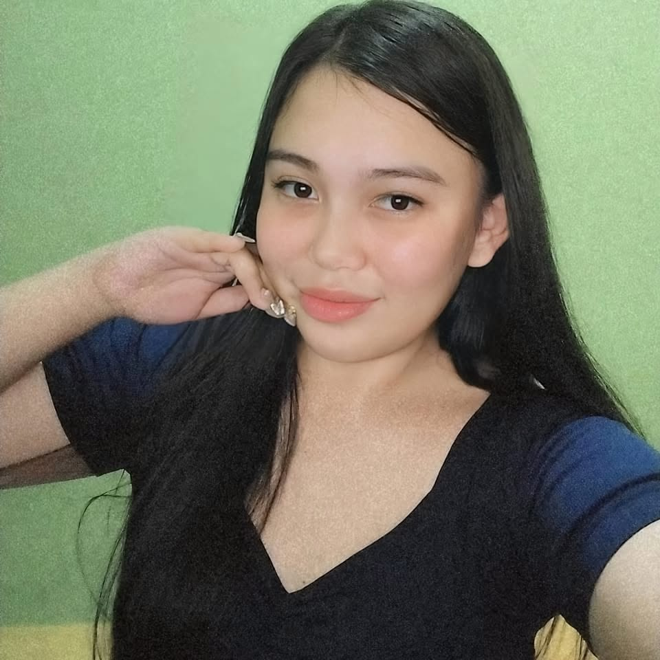

01COORDINATE& CREATE
GROUP LEADER
Joana Crisha Ayop
Group coordination and homepage
Read bio
Hi everyone! I’m Joana Crisha V. Ayop, a detail-oriented and adaptable student from TUP–Manila with a background in leadership, research, clear communication, and collaborative problem-solving. I enjoy bridging ideas and execution—whether that means organizing team tasks, presenting insights clearly, or contributing to technical and system-focused work. I’m always eager to learn new tools, adapt quickly to shifting priorities, and help the team hit its goals smoothly.